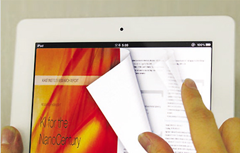
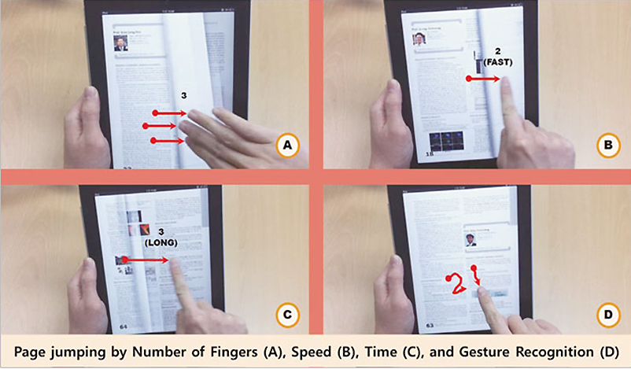

KAIST Top 10
KAIST Top 10
KAIST RESEARCH ACHIEVEMENTS
Touchscreen-based Ebook Navigation Interface for
Paper-like Interaction
KAIST Institute for IT Convergence Jun Kyun Choi
Summary
By the year 2018, traditional computing devices, such as the desktop and laptop are integrated into a small tablet device. People are working, studying and enjoying entertainment through this single smart device. Analog media including paper documents and books are almost nowhere to be seen. Instead, they are absorbed by thin, light touchscreen tablet devices. Despite the fact digital devices have brought a smarter life, the tablet device does not seem to provide as much degree of freedom, convenience and familiarity as paper books. Hence still a large portion of the population are living another world with the ebooks. This is critical whereas all the paper textbooks for elementary education have all been switched into ebooks from the year 2015. They are having a hard time adapting to this new environment leading to decreased learning efficiency. By applying this technology, the paper-like friendly user interface and ebook navigation interface is able to absorb both analog and digital book readers. Moreover even toddlers or preschoolers can easily adapt and read ebooks on a digital tablet device.
R&D Report

The paper-book-likely nature of our ebook navigation interface is intuitive yet efficient for digital book reading tasks. It could enhance the experiences of millions of current ebook users as well as paper book users. Our technology can not only be applied to current touchscreen tablet devices but also flexible display devices which are in the near future. The various page manipulation techniques developed are expected to bring the flooding news, media, novels and textbooks well into the hands of the readers.
Touchscreen tablets and ebooks are well known for their convenience. Yet there are a great portion of people either unwilling, or cannot move on to the digital world due to the familiarity of the paper books, which they have been using from the childhood. By activating and deploying ebooks to broader users, we could reduce use of paper, leading to green growth. Also it could enhance work efficiency and digital convenience across the social domains.
Bezel gesture based page flipping technology (Thumbing Through)
During a paper book reading task, we may not know explicit information (eg. page number) of where the content is. Then we perform the "thumbing through" gesture on the fore edge area (Figure 1.) of the book.
Finger book marking is a technique that is essential when you read a book and then go back to another page for a while. Unlike paper books, e-books do not interact with each other by moving their fingers between paper sheets. However, this behavior is frequent in reading activities and is found in casual reading environments like magazines. Therefore, it is possible to provide a user interface such as a paper book by implementing the above action on a touch screen in a touch screen tablet, which is the most widely used electronic book device.
At present, the basic one-page moving method provided by the North-America application is analyzed by the user's touch gesture so that the user can move at least one page at a time. We have increased the page mobility by mapping the time, speed, and pressure of the user touch gesture to the page movement unit. Also included is a gesture-based page movement that allows a user to enter a number directly on the screen when the user knows the page number to which the user wants to move, using a touch gesture.
 bezel touch gesture recognition based interface and ebook navigation prototype
Research Results
Awards, Published Paper and Invited Lectures : U[Media] Reuters (2012).Smart E-Book Turns the Page on Reading Technology
- [Media] Wired Magazine (2012).Multi-Touch iPad EBook Lets You Flip Pages Like a Deck of Cards
- [Media] KBS (2012).E-book with a look and feel of a paper book
- [Media] MBC (2012).Paper book like E-book developed
- [Standardization] Jaejeung Kim, Sangtae Kim and Soobin Lee,Enrichment of eBook User Interfaces: A Skeuomorphic Approach,W3C Workshop on Electronic Books and the Open Web Platform, Feb, 2013.
- [Publication] Sangtae Kim, Jaejeung Kim and Soobin Lee,Bezel-Flipper: Design of a Light-weight Flipping Interface for E-Book,ACM SIGCHI 2013.
- [Patent] 24 Issued/Filed Korean Patents, 2 Issued US